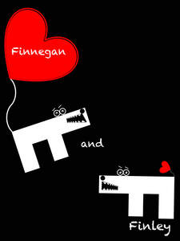

Trade Mark Journal No.2026/001 2 January 2026
UK00004311299 16 December 2025 (9,16,25)

- Class 9
- Radio, television, cable and satellite recordings, films; media for storage and/or reproduction of sound and/or visual images; pre-recorded discs, records, tapes, CD-ROMS; sound and video recordings; cinematographic and photographic films; motion picture films and videotapes; motion pictures films and videotapes, videodiscs and recorded magnetic tapes with sound and/or images; publications in electronic form; CD-ROMs; DVDs and other digital recording media; recording disks; compact disks; electronic publications; downloadable electronic publications; pre-recorded audio cassettes; compacts discs and other similar based electronic audio formats featuring fiction books; audio digital tapes; sound recordings; video recordings; recorded films; magnetic tapes, recorded tapes; motion picture films featuring comedy, drama, action, adventure and/or animation, and motion picture films for broadcast on television featuring comedy, drama, action, adventure and/or animation; pre-recorded vinyl records, audio tapes, audio-video tapes, audio video cassettes, audio video discs, and digital versatile discs featuring music, comedy, drama, action, adventure, and/or animation; Animated cartoons; short motion picture film cassettes featuring comedy, drama, action, adventure and/or animation to be used with hand-held viewers or projectors; audio tapes; downloadable series of children’s books; animated cartoons in the form of cinematographic films; animated films; audio books; audio recordings; digital recordings; binoculars; binocular covers; cases adapted for binoculars; books recorded on disc; books recorded on tape; cinematographic films; digital music downloadable from the internet; digital music downloadable provided from the internet; music recordings; downloadable application for mobile phones; mobile apps; downloadable applications; downloadable animated cartoons; downloadable comic strips; downloadable computer games; computer games; CD-ROM games; downloadable digital music; downloadable digital photos; downloadable e-books; downloadable electronic brochures; downloadable electronic games; downloadable electronic publications; downloadable films; downloadable movies; downloadable mobile applications; downloadable ringtones; downloadable videos; downloadable video recordings; e-books; motion motion picture films; musical sound recordings; musical video recordings; pre-recorded CDs featuring music; pre-recorded cinematographic films; pre-recorded DVDs; pre-recorded DVDs featuring games; prerecorded music videos; prerecorded exercise DVDs; prerecorded fitness DVDs; recorded films; recorded video tapes; sunglasses; fashion eyeglasses; fashion spectacles; fashion sunglasses; glasses for sports; glasses; sports eyewear; sports glasses; glasses frames; glasses cases; eyeglasses; boxes (cases) for sunglasses; boxes (cases) for glasses; boxes (cases) for contact lenses; boxing helmets; frames for sunglasses; frames for eyeglasses; protective masks; spectacles; sunglasses for pets; spectacle lenses; eye protection wear for sports; frames for spectacles and sunglasses; parts for spectacles; cords for spectacles; cases for spectacles and sunglasses; chains for spectacles and sunglasses; eyeglass lanyards; frames for spectacles; chains for sunglasses; cords for sunglasses; goggles; goggles for sports; goggles for use in sports; 3D spectacles; 3D glasses; cases for smartphones; cases for mobile phones; chains for eyeglasses; children’s eye glasses; corrective eyewear; corrective glasses; covers for glasses; covers for smartphones; covers for sunglasses; covers for tablet computers; crash helmets; crash helmets for cyclists; cyclists’ glasses; divers’ boots; divers’ face masks; divers’ gloves; divers’ goggles; diving equipment; drivers helmets; football helmets; helmets for use in sports; sports helmets; scuba diving masks; scuba goggles; scuba masks; scuba snorkels; ski glasses; ski helmets; ski goggles; smartwatches; smartglasses; smartbands; snorkels; snow goggles; snowboard helmets; .
- Class 16
- Publications; printed matter; posters; calendars; cards; stationery items; paper goods namely books and self-help books; writing instruments; Paper; cardboard; photographs; postcards; greetings cards; books; magazines; printed matter and paper goods, namely books featuring characters from animated, action adventure, comedy and/or drama features, comic books, children's books, magazines featuring characters from animated, action adventure, comedy and/or drama features, colouring books, children's activity books; writing paper, envelopes, notebooks, diaries, note cards, greeting cards, trading cards; lithographs; pens, pencils, cases therefor, erasers, crayons, markers, coloured pencils, painting sets, chalk and chalkboards; decals, heat transfers; posters; mounted and/or unmounted photographs; book covers, book marks, calendars, gift wrapping paper; paper party favors and paper party decorations, namely, paper napkins, paper doilies, paper place mats, crepe paper, paper hats, invitations, paper table cloths, paper cake decorations; paper photo frames; all the aforesaid being printed matter; none of the aforesaid goods relates to electronic games. .
- Class 25
- Aprons; clothing; footwear; children’s clothing; articles of clothing; menswear; womenswear; beanies; beanie hats; baseball caps; bomber jackets; boxing shorts; briefs (underwear); button down shirts; casual clothing; casual shirts; printed T-shirts; shirts; short-sleeved shirts; short-sleeved T-shirts; sweatshirts; sweatpants; sweatshorts; T-shirts; swim trunks; clothing; articles of clothing; menswear; baseball caps; bomber jackets; boxing shorts; briefs (underwear); button down shirts; casual clothing; casual shirts; printed T-shirts; shirts; short- sleeved shirts; short-sleeved T-shirts; sweatshirts; sweatpants; sweatshorts; T-shirts; swim trunks; athletic clothing; athletics vests; beach clothing; beach clothes; beach footwear; beachwear; blue jeans; board shorts; boardshorts; briefs; caps (headwear); clothes for sports; deck shoes; denim jackets; denim coats; denim shoes; denim jeans; denim pants; denims (clothing); face mask (clothing); face masks (fashionwear); football boots; football boots (Studs for -); football shirts; football socks; flip-flops; flip-flops for use as footwear; football jerseys; gloves; gym shorts; gymwear; headgear; hooded pullovers; hooded sweatshirts; hooded tops; hoodies; jackets (clothing); jackets being sports clothing; jeans; jogging bottoms (clothing); jogging bottoms; jogging pants; jogging outfits; jogging tops; jumpers; jumpers (pullovers); jumpers (sweaters); long-sleeve pullovers; long-sleeved shirts; long underwear; men’s clothing; men’s underwear; men’s socks; military boots; pants; padded pants for athletic use; padded shirts for athletic use; padded shorts for athletic use; polo shirts; printed t- shirts; rash guards; running vests; shorts; short trousers; snowboard boots; snowboard jackets; snowboard gloves; snowboard shoes; snowboard trousers; sports pants; sportswear; sweat bands; suspenders; suspenders (braces); sweat bands for the head; sweat bands for the wrist; sweatpants; sweaters; sweat bottoms; sweat jackets; sweat pants; sweat shirts; swim trunks; swimming caps; tank tops; tank- tops; thermal clothing; thermal headgear; thermal socks; thermal underwear; tracksuits; track jackets; track pants; tracksuit bottoms; tracksuit tops; triathlon clothing; trunks; trunks being clothing; trunks (Bathing -); underpants; vest tops; vests; wristbands; wrist bands. .
ROCKYIE JASON BEASTY JACK SHIELSONE